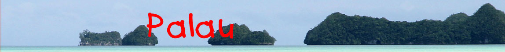

|

|
Le lac aux méduses
Le lac aux Méduses, en paluan Ongeim'l Tketau, en anglais Jellyfish Lake, est un lac d'eau saumâtre situé dans les îles Chelbacheb. Sa faune est notamment représentée par des méduses qui ont pu proliférer en l'absence de prédateurs. Elles y sont apparues via un tunnel, aujourd'hui obstrué, qui le reliait à l'océan. En l'absence de prédateurs, contrairement aux croyances, ces méduses n'ont pas perdu leurs cellules urticantes mais sont cependant inoffensives car leurs cnidocytes sont relativement petits et les morsures sont donc indétectables sur la peau. Pendant la journée, les méduses migrent d'un côté à l'autre du lac en suivant la course du soleil qui alimente les algues dont elles se nourissent. La nuit, les méduses descendent dans une couche d'eau concentrée en sulfure d'hydrogène située entre 15 et 20 mètres de profondeur. Les plongées dans le lac sont interdites d'une part pour ne pas déranger les méduses et d'autre part pour réduire le risque d'empoisonnement au sulfure d'hydrogène. (extrait Wikipedia)
|
||||||||||||||
{kind=link}